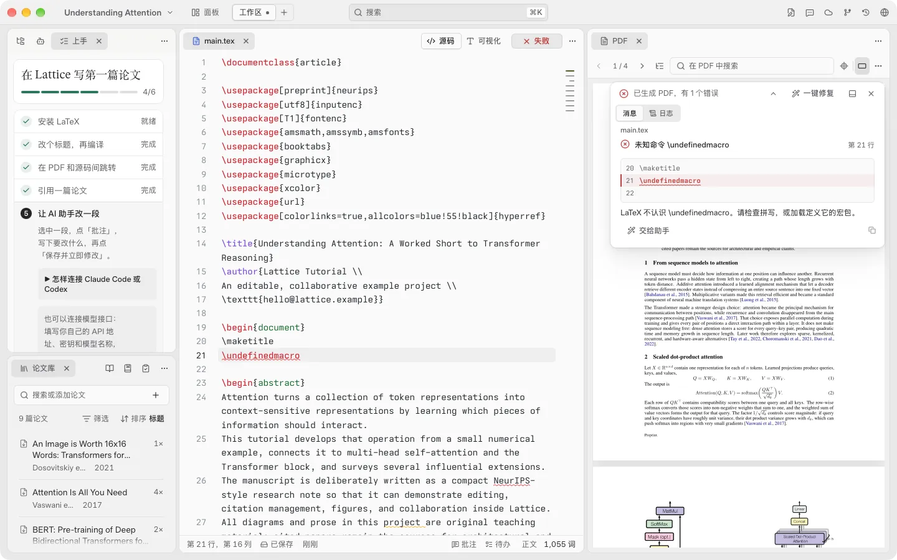

编译与排错
编译
按 ⌘S 保存并编译。默认情况下，停止输入后 Lattice 也会自动编译（设置 › 编辑编译 › 自动编译）。编辑器上方的编译按钮显示结果和耗时，点击可以重新编译。
在命令面板（⌘K）中：
- 从头编译：删除编译中间文件后重新编译。编译表现异常时可以试试。
- 清理缓存：只删除中间文件。
- 停止编译：停止正在进行的编译。
编译引擎（pdfLaTeX、XeLaTeX 或 LuaLaTeX）、shell escape 以及中间文件的位置在 设置 › 编辑编译 › 编译 中设置。项目里的 latexmkrc 会覆盖引擎设置。
查看并修复编译问题
编译失败时，编译按钮变红，PDF 上方弹出问题面板。每个问题标明文件和行号，显示附近的源码，并用通俗的话说明 LaTeX 报了什么错。

- 点击问题跳到对应行；用
F8和⇧F8可以在问题之间切换。 - 日志 显示 LaTeX 原始日志。
- 交给助手 把这个问题交给 AI 助手；一键修复 让它修复所有问题。
- 缺少的宏包可以直接在问题里安装。
导出
- 导出 arXiv 提交包…（项目菜单或 文件 菜单）生成一个可以独立编译的 ZIP。
- 导出 ZIP… 导出整个项目，Overleaf 可以直接导入。
- PDF 面板的菜单可以保存编译好的 PDF。